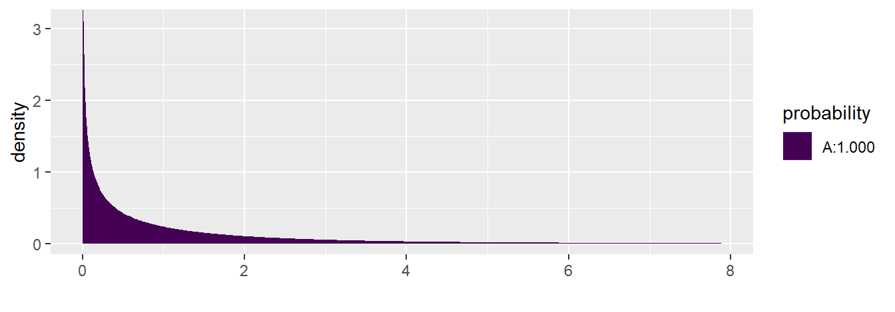
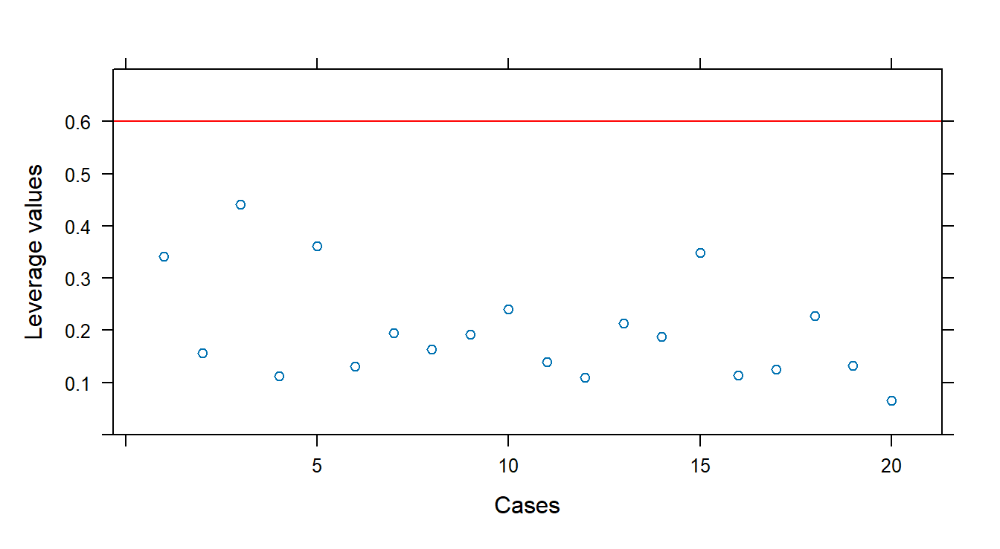

Chapter 3 R code for Regression Analysis
This chapter shows how to use R for methods covered in a regression analysis course. Some examples follow:
Kutner M.H., Nachtsheim C.J., and Neter, J., Applied Linear Regression Models, McGraw-Hill/Irwin.
We refer to this text as ALRM. Datasets are available at:
https://www.csub.edu/~emontoya2/datasets/textbookdata/index.html
3.1 Linear Regression with One Predictor Variable
We illustrate simple linear regression (SLR) using the Toluca Company example from ALRM. The model is: \[ y_i=\beta_0+\beta_1 x_i + \varepsilon_i \] Here, \(y_i\) is the response, \(x_i\) the predictor, and errors \(\varepsilon_i\) are independent, have mean 0, and constant variance \(\sigma^2\).
We use R to generate scatterplots, estimate coefficients, obtain fitted values, residuals, and estimate \(\sigma^2\).
3.1.1 Scatterplots
Scatterplots show the relationship between two variables. For bivariate data, the general plotting syntax is goal(y ~ x, data), where y is the response and x the predictor. To create a scatterplot, use xyplot.
Importing the Toluca data:
require(mosaic)
# Dataset is plain text without variable names, so we customize read.csv
url <- "http://www.csub.edu/~emontoya2/datasets/textbookdata/Kutner/Chapter%20%201%20Data%20Sets/CH01TA01.txt"
toluca.data <- read.csv(url, header=FALSE, col.names=c("xvar", "yvar"), sep="")Preview the data:
## Rows: 25
## Columns: 2
## $ xvar <int> 80, 30, 50, 90, 70, 60, 120, 80, 100, 50, 40, 70, 90, 20, 110, 10…
## $ yvar <int> 399, 121, 221, 376, 361, 224, 546, 352, 353, 157, 160, 252, 389, …Use variable names yvar and xvar in plotting functions:

Other useful xyplot() arguments:
xyplot(y ~ x | gfactor, data, main, xlab, ylab, col, pch)
# y: response variable
# x: predictor
# gfactor: optional grouping factor
# data: data frame
# main: plot title
# xlab, ylab: axis labels
# col: point color
# pch: symbol type (1–25)3.1.2 Least Squares (LS) Estimates
We can compute LS estimates either by applying the algebraic formulas or using the lm() function. The general form is lm(y ~ x, data).
Recall the LS estimators: \[ b_1=\frac{\sum (x_i-\bar{x})(y_i-\bar{y}) }{\sum (x_i-\bar{x})^2}, \quad b_0=\bar{y}- b_1\bar{x} \]
We apply these in R:
myx <- toluca.data$xvar
myy <- toluca.data$yvar
XminusXbar <- myx - mean(~myx)
YminusYbar <- myy - mean(~myy)
XminusXbarSq <- XminusXbar^2
b.1 <- sum((myx - mean(~myx)) * (myy - mean(~myy))) / sum((myx - mean(~myx))^2)
b.1## [1] 3.570202## [1] 62.36586Thus, \(b_1=3.570\) and \(b_0=62.366\).
Alternatively, use lm() with the dataframe and variable names:
##
## Call:
## lm(formula = yvar ~ xvar, data = toluca.data)
##
## Coefficients:
## (Intercept) xvar
## 62.37 3.57To access more model details, save the result to an lm object:
Summarize to view coefficients and more:
##
## Call:
## lm(formula = yvar ~ xvar, data = toluca.data)
##
## Residuals:
## Min 1Q Median 3Q Max
## -83.876 -34.088 -5.982 38.826 103.528
##
## Coefficients:
## Estimate Std. Error t value Pr(>|t|)
## (Intercept) 62.366 26.177 2.382 0.0259 *
## xvar 3.570 0.347 10.290 4.45e-10 ***
## ---
## Signif. codes: 0 '***' 0.001 '**' 0.01 '*' 0.05 '.' 0.1 ' ' 1
##
## Residual standard error: 48.82 on 23 degrees of freedom
## Multiple R-squared: 0.8215, Adjusted R-squared: 0.8138
## F-statistic: 105.9 on 1 and 23 DF, p-value: 4.449e-10Or use coef() to extract just the coefficients:
## (Intercept) xvar
## 62.365859 3.5702023.1.3 Plotting the Estimated Regression Line
We can plot the fitted line using either xyplot() or plotModel().


3.1.4 Fitted or Predicted Values
To get fitted values \(\hat{y}_i = b_0 + b_1 x_i\), use:
## 1 2 3 4 5 6 7 8
## 347.9820 169.4719 240.8760 383.6840 312.2800 276.5780 490.7901 347.9820
## 9 10 11 12 13 14 15 16
## 419.3861 240.8760 205.1739 312.2800 383.6840 133.7699 455.0881 419.3861
## 17 18 19 20 21 22 23 24
## 169.4719 240.8760 383.6840 455.0881 169.4719 383.6840 205.1739 347.9820
## 25
## 312.2800## 1 2 3 4 5 6 7 8
## 347.9820 169.4719 240.8760 383.6840 312.2800 276.5780 490.7901 347.9820
## 9 10 11 12 13 14 15 16
## 419.3861 240.8760 205.1739 312.2800 383.6840 133.7699 455.0881 419.3861
## 17 18 19 20 21 22 23 24
## 169.4719 240.8760 383.6840 455.0881 169.4719 383.6840 205.1739 347.9820
## 25
## 312.2800To predict values at new \(x\) values (e.g., 31 and 119), use:
## 1 2
## 173.0421 487.21993.1.5 Residuals
Residuals are the differences between observed and fitted values: \(e_i = y_i - \hat{y}_i\). Use residuals() on an lm object:
## 1 2 3 4 5 6
## 51.0179798 -48.4719192 -19.8759596 -7.6840404 48.7200000 -52.5779798
## 7 8 9 10 11 12
## 55.2098990 4.0179798 -66.3860606 -83.8759596 -45.1739394 -60.2800000
## 13 14 15 16 17 18
## 5.3159596 -20.7698990 -20.0880808 0.6139394 42.5280808 27.1240404
## 19 20 21 22 23 24
## -6.6840404 -34.0880808 103.5280808 84.3159596 38.8260606 -5.9820202
## 25
## 10.7200000Alternatively, compute them directly:
3.2 Inference in Simple Linear Regression
This section covers inference on regression parameters, mean response, prediction intervals, ANOVA, and association using R.
3.2.1 Inferences for \(\beta_0\) and \(\beta_1\)
We use the Toluca data to perform inference on slope and intercept. Although most attention focuses on \(\beta_1\), similar steps apply for \(\beta_0\).
Use summary() to obtain test statistics and p-values:
summary(toluca.fit)
##
## Call:
## lm(formula = yvar ~ xvar, data = toluca.data)
##
## Residuals:
## Min 1Q Median 3Q Max
## -83.876 -34.088 -5.982 38.826 103.528
##
## Coefficients:
## Estimate Std. Error t value Pr(>|t|)
## (Intercept) 62.366 26.177 2.382 0.0259 *
## xvar 3.570 0.347 10.290 4.45e-10 ***
## ---
## Signif. codes: 0 '***' 0.001 '**' 0.01 '*' 0.05 '.' 0.1 ' ' 1
##
## Residual standard error: 48.82 on 23 degrees of freedom
## Multiple R-squared: 0.8215, Adjusted R-squared: 0.8138
## F-statistic: 105.9 on 1 and 23 DF, p-value: 4.449e-10
From the output, we get \(b_1\) and \(b_0\), their standard errors, and t-values.
You can also compute \(t = b_1 / s\{b_1\}\) manually:
MSE <- sum(e^2) / (n - 2)
sd.b1 <- sqrt(MSE / sum((myx - mean(~myx))^2))
t.star <- b.1 / sd.b1
t.star
## [1] 10.28959Under \(H_0\), the test statistic follows \(t_{n-2}\).
To compute p-values: - For \(H_a: \beta > 0\), use:

## [1] 2.222735e-10- For \(H_a: \beta < 0\):

## [1] 1- For \(H_a: \beta \ne 0\): \[2 \times P(t_{n-2} > |10.290|) = .0000000004\]
3.2.2 Confidence Interval for \(\beta_1\)
The CI formula is: \[ b_1 \pm t_{1-\alpha/2, n-2} s\{b_1\} \]
To compute \(t_{1 - .05/2, 23}\):

## [1] 2.068658Then compute bounds:
Or use confint():
confint(toluca.fit, level = 0.95)
## 2.5 % 97.5 %
## (Intercept) 8.213711 116.518006
## xvar 2.852435 4.287969
### CI for the Mean Response ($E(y_h)$) and a Prediction Interval for $y_h$
To compute a CI for $E(y_h)$ at $x_h = 100$, use `predict()` with arguments `interval = "confidence"` and the desired level:
``` r
X.new <- data.frame(xvar = c(100))
predict.lm(toluca.fit, newdata = X.new, interval = "confidence", level = 0.90)## fit lwr upr
## 1 419.3861 394.9251 443.847To get a prediction interval for a new \(y_h\) at \(x_h = 100\), change interval to "prediction":
## fit lwr upr
## 1 419.3861 332.2072 506.56493.2.3 ANOVA for Regression
Use anova() on the lm object to get the ANOVA table:
## Analysis of Variance Table
##
## Response: yvar
## Df Sum Sq Mean Sq F value Pr(>F)
## xvar 1 252378 252378 105.88 4.449e-10 ***
## Residuals 23 54825 2384
## ---
## Signif. codes: 0 '***' 0.001 '**' 0.01 '*' 0.05 '.' 0.1 ' ' 1
To compute the F-test p-value manually:

## [1] 4.44711e-103.2.4 Measures of Association
You can compute \(R^2\) and \(r\) from the ANOVA table or directly:
yresp <- toluca.data$yvar
xpred <- toluca.data$xvar
SSR <- b.1^2 * sum((xpred - mean(xpred))^2)
SSTO <- sum((yresp - mean(yresp))^2)
R.sq <- SSR / SSTO
R.sq## [1] 0.82153353.2.5 Residual Analysis and Remedial Measures
We assess model assumptions using residual plots. For SLR, if \(\varepsilon_i \sim N(0, \sigma^2)\), residuals \(e_i\) should reflect this.
| Assumption | Plot Type |
|---|---|
| Normality | QQ-plot |
| Independence | Residuals vs. \(x\) or \(\hat{y}\) |
| Constant variance | Residuals vs. \(x\) or \(\hat{y}\) |
| Linearity | Residuals vs. \(x\) or \(\hat{y}\) |
| Outliers | Residuals vs. \(x\); QQ-plot |
If normality is not assumed, still check the QQ-plot for heavy tails.
3.2.6 Creating Residual Plots
Use xyplot() and xqqmath() for diagnostics:
tolucafitted <- fitted(toluca.fit)
tolresids <- residuals(toluca.fit)
xyplot(tolresids ~ xvar, data=toluca.data, main="Residuals vs x")


Optional: explore other summaries of residuals:


3.2.7 Residual Plots from the tactile Package
The tactile package extends xyplot() to automatically generate residual diagnostics from an lm object. For SLR, it includes:
- Residuals vs. fitted values: Checks for independence, constant variance, and linearity. No trend or pattern suggests assumptions are met.
- Normal QQ-plot: Assesses normality; residuals should align with the diagonal.
- Standardized residuals vs. fitted values (scale-location plot): Also checks variance and linearity.
- Residuals vs. leverage: Identifies influential points. High leverage + large residuals = outliers.
3.2.8 Testing for Departures from Normality
Use the Shapiro-Wilk and Lilliefors tests to assess if residuals depart from normality. The null hypothesis is normality.
##
## Shapiro-Wilk normality test
##
## data: tolresids
## W = 0.9789, p-value = 0.8626##
## Lilliefors (Kolmogorov-Smirnov) normality test
##
## data: tolresids
## D = 0.09572, p-value = 0.8027If p-values are large, there’s no strong evidence against normality.
3.2.9 Transformations
Transforming the response or predictor can help address violations of model assumptions. Use mutate() from the dplyr package (loaded with mosaic) to create transformed variables:
## Rows: 25
## Columns: 2
## $ xvar <int> 80, 30, 50, 90, 70, 60, 120, 80, 100, 50, 40, 70, 90, 20, 110, 10…
## $ yvar <int> 399, 121, 221, 376, 361, 224, 546, 352, 353, 157, 160, 252, 389, …# Apply square root to y
toluca.dataVer1 <- mutate(toluca.data, sqrty = sqrt(yvar))
glimpse(toluca.dataVer1)## Rows: 25
## Columns: 3
## $ xvar <int> 80, 30, 50, 90, 70, 60, 120, 80, 100, 50, 40, 70, 90, 20, 110, 1…
## $ yvar <int> 399, 121, 221, 376, 361, 224, 546, 352, 353, 157, 160, 252, 389,…
## $ sqrty <dbl> 19.97498, 11.00000, 14.86607, 19.39072, 19.00000, 14.96663, 23.3…# Apply log to x
toluca.dataVer2 <- mutate(toluca.dataVer1, lnx = log(xvar))
glimpse(toluca.dataVer2)## Rows: 25
## Columns: 4
## $ xvar <int> 80, 30, 50, 90, 70, 60, 120, 80, 100, 50, 40, 70, 90, 20, 110, 1…
## $ yvar <int> 399, 121, 221, 376, 361, 224, 546, 352, 353, 157, 160, 252, 389,…
## $ sqrty <dbl> 19.97498, 11.00000, 14.86607, 19.39072, 19.00000, 14.96663, 23.3…
## $ lnx <dbl> 4.382027, 3.401197, 3.912023, 4.499810, 4.248495, 4.094345, 4.78…# Multiple transformations
toluca.dataWithTrans <- mutate(toluca.data,
sqrty = sqrt(yvar), lnx = log(xvar),
lny = log(yvar), sqrd = yvar^2, cubertx = xvar^(1/3))
glimpse(toluca.dataWithTrans)## Rows: 25
## Columns: 7
## $ xvar <int> 80, 30, 50, 90, 70, 60, 120, 80, 100, 50, 40, 70, 90, 20, 110,…
## $ yvar <int> 399, 121, 221, 376, 361, 224, 546, 352, 353, 157, 160, 252, 38…
## $ sqrty <dbl> 19.97498, 11.00000, 14.86607, 19.39072, 19.00000, 14.96663, 23…
## $ lnx <dbl> 4.382027, 3.401197, 3.912023, 4.499810, 4.248495, 4.094345, 4.…
## $ lny <dbl> 5.988961, 4.795791, 5.398163, 5.929589, 5.888878, 5.411646, 6.…
## $ sqrd <dbl> 159201, 14641, 48841, 141376, 130321, 50176, 298116, 123904, 1…
## $ cubertx <dbl> 4.308869, 3.107233, 3.684031, 4.481405, 4.121285, 3.914868, 4.…Visualize and fit models using transformed variables:
##
## Call:
## lm(formula = sqrty ~ xvar, data = toluca.dataWithTrans)
##
## Coefficients:
## (Intercept) xvar
## 9.9722 0.10553.2.10 F-Test for Lack of Fit
The lack-of-fit test requires repeated \(x\) values. It compares:
- Full model: \(Y_{ij} = \mu_j + \varepsilon_{ij}\)
- Reduced model: \(Y_{ij} = \beta_0 + \beta_1 X_j + \varepsilon_{ij}\)
If models are nested, use anova() to compare them:
url <- "http://www.csub.edu/~emontoya2/datasets/textbookdata/Kutner/Chapter%20%203%20Data%20Sets/CH03TA04.txt"
bank.data <- read.csv(url, header = FALSE, col.names = c("x", "y"), sep = "")
glimpse(bank.data)## Rows: 11
## Columns: 2
## $ x <int> 125, 100, 200, 75, 150, 175, 75, 175, 125, 200, 100
## $ y <int> 160, 112, 124, 28, 152, 156, 42, 124, 150, 104, 136# Convert x to factor for full model
bank.dataUD <- mutate(bank.data, xfac = as.factor(x))
levels.x <- levels(bank.dataUD$xfac)
n <- 11
c <- 6
n - c## [1] 5fit.bank.full <- lm(y ~ xfac, data = bank.dataUD)
fit.bank.reduced <- lm(y ~ x, data = bank.dataUD)
anova(fit.bank.reduced, fit.bank.full, test = "F")## Analysis of Variance Table
##
## Model 1: y ~ x
## Model 2: y ~ xfac
## Res.Df RSS Df Sum of Sq F Pr(>F)
## 1 9 14742
## 2 5 1148 4 13594 14.801 0.005594 **
## ---
## Signif. codes: 0 '***' 0.001 '**' 0.01 '*' 0.05 '.' 0.1 ' ' 1
3.2.11 Least Absolute Deviation (LAD) Regression
Least squares estimation assumes valid model assumptions. When these fail, least squares can mislead. LAD regression minimizes absolute residuals, making it more robust to outliers.
Diagnostic plots can be helpful but may be inconclusive. Robust regression methods, like LAD, offer alternatives that are less sensitive to violations of assumptions and outliers.
3.3 The Matrix Approach to Simple Linear Regression
3.3.1 Creating a Matrix
Use c() to create vectors:
## [1] 4## [1] 6Create matrices using matrix():
a <- c(1, 2, 3, 4, 5, 6)
A <- matrix(data = a, nrow = 2, ncol = 3, byrow = FALSE)
B <- matrix(data = a, nrow = 2, ncol = 3, byrow = TRUE)
A## [,1] [,2] [,3]
## [1,] 1 3 5
## [2,] 2 4 6## [,1] [,2] [,3]
## [1,] 1 2 3
## [2,] 4 5 63.3.2 Matrix Operations
Key matrix operations in R:
| Operator | Description |
|---|---|
%*% |
Matrix multiplication |
t() |
Transpose |
solve() |
Inverse of a matrix |
* |
Element-wise multiplication |
Examples:
C <- matrix(c(1, 2, 1, -8, 26, 4, 5, 6, 10), nrow=3)
D <- matrix(c(7, 8, 9, 10, 11, 12, 13, 14, 15), nrow=3)
C %*% D## [,1] [,2] [,3]
## [1,] -12 -18 -24
## [2,] 276 378 480
## [3,] 129 174 219## [,1] [,2] [,3]
## [1,] 1 2 1
## [2,] -8 26 4
## [3,] 5 6 10## [,1] [,2] [,3]
## [1,] 7 -80 65
## [2,] 16 286 84
## [3,] 9 48 150## [,1] [,2] [,3]
## [1,] 0.91472868 0.38759690 -0.68992248
## [2,] -0.05426357 0.01937984 0.01550388
## [3,] -0.06976744 -0.04651163 0.16279070## [,1] [,2] [,3]
## [1,] 8 2 18
## [2,] 10 37 20
## [3,] 10 16 253.3.3 LS Estimation
SLR model in matrix form: \[ \boldsymbol{Y} = \boldsymbol{X}\boldsymbol{\beta} + \boldsymbol{\varepsilon} \]
Where: - \(\boldsymbol{Y}\): \(n \times 1\) response vector - \(\boldsymbol{X}\): \(n \times 2\) matrix (intercept and \(x\)) - \(\boldsymbol{\beta}\): \(2 \times 1\) vector (\(\beta_0\), \(\beta_1\))
Set up the data:
## Rows: 25
## Columns: 2
## $ xvar <int> 80, 30, 50, 90, 70, 60, 120, 80, 100, 50, 40, 70, 90, 20, 110, 10…
## $ yvar <int> 399, 121, 221, 376, 361, 224, 546, 352, 353, 157, 160, 252, 389, …hrs <- toluca.data$yvar
lotsize <- toluca.data$xvar
yvec <- matrix(hrs, nrow = 25)
ones <- rep(1, 25)
Xmat <- cbind(ones, lotsize)Compute LS estimates: \[ \boldsymbol{b} = (\boldsymbol{X}^T\boldsymbol{X})^{-1}\boldsymbol{X}^T \boldsymbol{y} \]
## [,1]
## ones 62.365859
## lotsize 3.570202Fitted values \(\hat{\boldsymbol{y}} = \boldsymbol{X} \boldsymbol{b}\):
## [,1]
## [1,] 347.9820
## [2,] 169.4719
## [3,] 240.8760
## [4,] 383.6840
## [5,] 312.2800
## [6,] 276.5780
## [7,] 490.7901
## [8,] 347.9820
## [9,] 419.3861
## [10,] 240.8760
## [11,] 205.1739
## [12,] 312.2800
## [13,] 383.6840
## [14,] 133.7699
## [15,] 455.0881
## [16,] 419.3861
## [17,] 169.4719
## [18,] 240.8760
## [19,] 383.6840
## [20,] 455.0881
## [21,] 169.4719
## [22,] 383.6840
## [23,] 205.1739
## [24,] 347.9820
## [25,] 312.2800Alternatively, use the hat matrix:
## [,1]
## [1,] 347.9820
## [2,] 169.4719
## [3,] 240.8760
## [4,] 383.6840
## [5,] 312.2800
## [6,] 276.5780
## [7,] 490.7901
## [8,] 347.9820
## [9,] 419.3861
## [10,] 240.8760
## [11,] 205.1739
## [12,] 312.2800
## [13,] 383.6840
## [14,] 133.7699
## [15,] 455.0881
## [16,] 419.3861
## [17,] 169.4719
## [18,] 240.8760
## [19,] 383.6840
## [20,] 455.0881
## [21,] 169.4719
## [22,] 383.6840
## [23,] 205.1739
## [24,] 347.9820
## [25,] 312.28003.4 Multiple Linear Regression (MLR)
We consider the MLR model: \[ Y_i = \beta_0 + \beta_1 x_{i1} + \beta_2 x_{i2} + \cdots + \beta_p x_{i,p-1} + \varepsilon_i \] where \(\varepsilon_i \overset{iid}{\sim} N(0, \sigma^2)\). We illustrate fitting the model using R and the Dwaine Studios example from ALRM.
Although the model can be expressed in matrix form, we’ll use lm() and anova() for analysis.
3.4.1 Least Squares Estimates
Import the data:
url <- "http://www.csub.edu/~emontoya2/datasets/textbookdata/Kutner/Chapter%20%206%20Data%20Sets/CH06FI05.txt"
dwaine.data <- read.csv(url, header=FALSE, col.names=c("x1", "x2", "y"), sep="")
glimpse(dwaine.data)## Rows: 21
## Columns: 3
## $ x1 <dbl> 68.5, 45.2, 91.3, 47.8, 46.9, 66.1, 49.5, 52.0, 48.9, 38.4, 87.9, 7…
## $ x2 <dbl> 16.7, 16.8, 18.2, 16.3, 17.3, 18.2, 15.9, 17.2, 16.6, 16.0, 18.3, 1…
## $ y <dbl> 174.4, 164.4, 244.2, 154.6, 181.6, 207.5, 152.8, 163.2, 145.4, 137.…Matrix approach:
n <- 21
Xmat <- cbind(1, dwaine.data$x1, dwaine.data$x2)
yrespvec <- matrix(dwaine.data$y, nrow = n)
b <- solve(t(Xmat) %*% Xmat) %*% t(Xmat) %*% yrespvec
b## [,1]
## [1,] -68.85707
## [2,] 1.45456
## [3,] 9.36550Fit MLR using lm():
##
## Call:
## lm(formula = y ~ x1 + x2, data = dwaine.data)
##
## Coefficients:
## (Intercept) x1 x2
## -68.857 1.455 9.3663.4.2 Fitted Values, ANOVA Table, and Residuals
Extract LS estimates:
## (Intercept) x1 x2
## -68.85707 1.45456 9.36550Get fitted values and residuals:
## 1 2 3 4 5 6 7 8
## 187.1841 154.2294 234.3963 153.3285 161.3849 197.7414 152.0551 167.8666
## 9 10 11 12 13 14 15 16
## 157.7382 136.8460 230.3874 197.1849 222.6857 141.5184 174.2132 228.1239
## 17 18 19 20 21
## 145.7470 159.0013 230.9870 230.3161 157.0644## 1 2 3 4 5 6
## -12.7841146 10.1705737 9.8036764 1.2714690 20.2150722 9.7585779
## 7 8 9 10 11 12
## 0.7449178 -4.6666316 -12.3381967 0.3539791 11.5126289 -6.0849209
## 13 14 15 16 17 18
## 9.3142995 3.7815611 -13.1132116 -18.4238900 0.6530062 -15.0013134
## 19 20 21
## 1.6129777 -6.2160615 9.4356009Get ANOVA table:
## Analysis of Variance Table
##
## Response: y
## Df Sum Sq Mean Sq F value Pr(>F)
## x1 1 23371.8 23371.8 192.8962 4.64e-11 ***
## x2 1 643.5 643.5 5.3108 0.03332 *
## Residuals 18 2180.9 121.2
## ---
## Signif. codes: 0 '***' 0.001 '**' 0.01 '*' 0.05 '.' 0.1 ' ' 1
This table decomposes \(SSR(X_1, X_2)\) into \(SSR(X_1) + SSR(X_2 \mid X_1)\).
3.4.3 Inference on Regression Parameters
Summarize the model:
##
## Call:
## lm(formula = y ~ x1 + x2, data = dwaine.data)
##
## Residuals:
## Min 1Q Median 3Q Max
## -18.4239 -6.2161 0.7449 9.4356 20.2151
##
## Coefficients:
## Estimate Std. Error t value Pr(>|t|)
## (Intercept) -68.8571 60.0170 -1.147 0.2663
## x1 1.4546 0.2118 6.868 2e-06 ***
## x2 9.3655 4.0640 2.305 0.0333 *
## ---
## Signif. codes: 0 '***' 0.001 '**' 0.01 '*' 0.05 '.' 0.1 ' ' 1
##
## Residual standard error: 11.01 on 18 degrees of freedom
## Multiple R-squared: 0.9167, Adjusted R-squared: 0.9075
## F-statistic: 99.1 on 2 and 18 DF, p-value: 1.921e-10
The output gives \(F^*\) for testing \(\beta_1 = \beta_2 = 0\) and \(t^*\) for individual parameters.
3.4.4 Mean Response and Prediction Intervals
To get a 95% CI for expected sales when \(x_1 = 65.4\) and \(x_2 = 17.6\):
new.x.data <- data.frame(x1 = 65.4, x2 = 17.6)
predict(dwaine.fit, newdata = new.x.data, interval = "confidence", level = 0.95)## fit lwr upr
## 1 191.1039 185.2911 196.9168To get a 95% prediction interval at the same values:
## fit lwr upr
## 1 191.1039 167.2589 214.949To predict for two cities:
new.x.data2 <- data.frame(x1 = c(65.4, 53.1), x2 = c(17.6, 17.7))
predict.lm(dwaine.fit, newdata = new.x.data2, interval = "prediction", level = 0.95)## fit lwr upr
## 1 191.1039 167.2589 214.9490
## 2 174.1494 149.0867 199.21213.4.5 Diagnostics
Diagnostics in MLR follow the same procedures as in SLR: QQ-plots, residuals vs. fitted values, and residuals vs. predictors. We now also use scatterplot and correlation matrices:

## x1 x2 y
## x1 1.0000000 0.7812993 0.9445543
## x2 0.7812993 1.0000000 0.8358025
## y 0.9445543 0.8358025 1.00000003.4.6 ANOVA Table with SSR Decomposition
R decomposes SSR based on the order of predictors in lm(). For example:
\[
SSR(x_1, x_2, x_3) = SSR(x_3) + SSR(x_2 \mid x_3) + SSR(x_1 \mid x_3, x_2)
\]
To specify this order, list predictors as x3 + x2 + x1.
Using the Body Fat example:
url <- "https://www.csub.edu/~emontoya2/datasets/textbookdata/Kutner/Chapter%20%207%20Data%20Sets/CH07TA01.txt"
bf.data <- read.csv(url, header=FALSE, col.names=c("x1", "x2", "x3", "y"), sep="")
glimpse(bf.data)## Rows: 20
## Columns: 4
## $ x1 <dbl> 19.5, 24.7, 30.7, 29.8, 19.1, 25.6, 31.4, 27.9, 22.1, 25.5, 31.1, 3…
## $ x2 <dbl> 43.1, 49.8, 51.9, 54.3, 42.2, 53.9, 58.5, 52.1, 49.9, 53.5, 56.6, 5…
## $ x3 <dbl> 29.1, 28.2, 37.0, 31.1, 30.9, 23.7, 27.6, 30.6, 23.2, 24.8, 30.0, 2…
## $ y <dbl> 11.9, 22.8, 18.7, 20.1, 12.9, 21.7, 27.1, 25.4, 21.3, 19.3, 25.4, 2…## Analysis of Variance Table
##
## Response: y
## Df Sum Sq Mean Sq F value Pr(>F)
## x3 1 10.05 10.05 1.6343 0.2193
## x2 1 374.23 374.23 60.8471 7.684e-07 ***
## x1 1 12.70 12.70 2.0657 0.1699
## Residuals 16 98.40 6.15
## ---
## Signif. codes: 0 '***' 0.001 '**' 0.01 '*' 0.05 '.' 0.1 ' ' 1This provides the extra sums of squares for \(x_2\) and \(x_1\) given \(x_3\).
3.4.7 Testing \(\beta_k \ne 0\) for Some \(k\)
To test whether one or more coefficients are significant, compare nested models using anova().
For example, test \(H_0: \beta_2 = \beta_3 = 0\) in the Body Fat data:
- Reduced model: \(y = \beta_0 + \beta_1 x_1 + \varepsilon\)
- Full model: \(y = \beta_0 + \beta_1 x_1 + \beta_2 x_2 + \beta_3 x_3 + \varepsilon\)
Use anova() to compare:
reduced.fit <- lm(y ~ x1, data = bf.data)
full.fit <- lm(y ~ x1 + x2 + x3, data = bf.data)
anova(reduced.fit, full.fit, test = "F")## Analysis of Variance Table
##
## Model 1: y ~ x1
## Model 2: y ~ x1 + x2 + x3
## Res.Df RSS Df Sum of Sq F Pr(>F)
## 1 18 143.120
## 2 16 98.405 2 44.715 3.6352 0.04995 *
## ---
## Signif. codes: 0 '***' 0.001 '**' 0.01 '*' 0.05 '.' 0.1 ' ' 1
3.5 Interactions
To include an interaction between \(x_1\) and \(x_2\), use x1*x2 in the model formula. This adds both main effects and the interaction. Alternatively, create the interaction manually with mutate():
##
## Call:
## lm(formula = y ~ x1 * x2 + x3, data = bf.data)
##
## Residuals:
## Min 1Q Median 3Q Max
## -3.5365 -1.8682 0.2772 1.2493 4.1589
##
## Coefficients:
## Estimate Std. Error t value Pr(>|t|)
## (Intercept) 150.87925 124.06427 1.216 0.243
## x1 4.15688 3.11251 1.336 0.202
## x2 -3.64609 3.11348 -1.171 0.260
## x3 -2.45340 1.72707 -1.421 0.176
## x1:x2 0.01401 0.02911 0.481 0.637
##
## Residual standard error: 2.542 on 15 degrees of freedom
## Multiple R-squared: 0.8044, Adjusted R-squared: 0.7522
## F-statistic: 15.42 on 4 and 15 DF, p-value: 3.41e-05bf.data2 <- mutate(bf.data, x1x2 = x1 * x2)
BodyFat.Inter2 <- lm(y ~ x1 + x2 + x3 + x1x2, data = bf.data2)
summary(BodyFat.Inter2)##
## Call:
## lm(formula = y ~ x1 + x2 + x3 + x1x2, data = bf.data2)
##
## Residuals:
## Min 1Q Median 3Q Max
## -3.5365 -1.8682 0.2772 1.2493 4.1589
##
## Coefficients:
## Estimate Std. Error t value Pr(>|t|)
## (Intercept) 150.87925 124.06427 1.216 0.243
## x1 4.15688 3.11251 1.336 0.202
## x2 -3.64609 3.11348 -1.171 0.260
## x3 -2.45340 1.72707 -1.421 0.176
## x1x2 0.01401 0.02911 0.481 0.637
##
## Residual standard error: 2.542 on 15 degrees of freedom
## Multiple R-squared: 0.8044, Adjusted R-squared: 0.7522
## F-statistic: 15.42 on 4 and 15 DF, p-value: 3.41e-053.6 Standardized Multiple Regression
To compare coefficient magnitudes, standardize variables using scale() within mutate():
url <- "http://www.csub.edu/~emontoya2/datasets/textbookdata/Kutner/Chapter%20%206%20Data%20Sets/CH06FI05.txt"
dwaine.data <- read.csv(url, header = FALSE, col.names = c("x1", "x2", "y"), sep = "")
glimpse(dwaine.data)## Rows: 21
## Columns: 3
## $ x1 <dbl> 68.5, 45.2, 91.3, 47.8, 46.9, 66.1, 49.5, 52.0, 48.9, 38.4, 87.9, 7…
## $ x2 <dbl> 16.7, 16.8, 18.2, 16.3, 17.3, 18.2, 15.9, 17.2, 16.6, 16.0, 18.3, 1…
## $ y <dbl> 174.4, 164.4, 244.2, 154.6, 181.6, 207.5, 152.8, 163.2, 145.4, 137.…dwaine.dataStdz <- mutate(dwaine.data,
y.stdz = scale(y),
x1.stdz = scale(x1),
x2.stdz = scale(x2))
head(dwaine.dataStdz)## x1 x2 y y.stdz x1.stdz x2.stdz
## 1 68.5 16.7 174.4 -0.20736368 0.3480579 -0.4563909
## 2 45.2 16.8 164.4 -0.48367315 -0.9032627 -0.3533349
## 3 91.3 18.2 244.2 1.72127642 1.5725261 1.0894493
## 4 47.8 16.3 154.6 -0.75445643 -0.7636303 -0.8686150
## 5 46.9 17.3 181.6 -0.00842086 -0.8119646 0.1619452
## 6 66.1 18.2 207.5 0.70722067 0.2191665 1.0894493Fit the model (note: use -1 to exclude intercept, as variables are standardized):
dwaine.fitStdz <- lm(y.stdz ~ x1.stdz + x2.stdz - 1, data = dwaine.dataStdz)
summary(dwaine.fitStdz)##
## Call:
## lm(formula = y.stdz ~ x1.stdz + x2.stdz - 1, data = dwaine.dataStdz)
##
## Residuals:
## Min 1Q Median 3Q Max
## -0.50907 -0.17176 0.02058 0.26071 0.55856
##
## Coefficients:
## Estimate Std. Error t value Pr(>|t|)
## x1.stdz 0.7484 0.1061 7.056 1.03e-06 ***
## x2.stdz 0.2511 0.1061 2.368 0.0287 *
## ---
## Signif. codes: 0 '***' 0.001 '**' 0.01 '*' 0.05 '.' 0.1 ' ' 1
##
## Residual standard error: 0.296 on 19 degrees of freedom
## Multiple R-squared: 0.9167, Adjusted R-squared: 0.908
## F-statistic: 104.6 on 2 and 19 DF, p-value: 5.544e-11The output includes standardized coefficients \(b_i^*\).
3.7 Polynomial Regression and Categorical Predictors
We first fit a second-order polynomial model:
\[
y_i = \beta_0 + \beta_1 x_i^* + \beta_2 (x_i^*)^2 + \varepsilon_i
\]
using the airquality dataset, where \(x_i^* = x_i - \bar{x}\).
Center and square the explanatory variable:
## Rows: 153
## Columns: 6
## $ Ozone <int> 41, 36, 12, 18, NA, 28, 23, 19, 8, NA, 7, 16, 11, 14, 18, 14, …
## $ Solar.R <int> 190, 118, 149, 313, NA, NA, 299, 99, 19, 194, NA, 256, 290, 27…
## $ Wind <dbl> 7.4, 8.0, 12.6, 11.5, 14.3, 14.9, 8.6, 13.8, 20.1, 8.6, 6.9, 9…
## $ Temp <int> 67, 72, 74, 62, 56, 66, 65, 59, 61, 69, 74, 69, 66, 68, 58, 64…
## $ Month <int> 5, 5, 5, 5, 5, 5, 5, 5, 5, 5, 5, 5, 5, 5, 5, 5, 5, 5, 5, 5, 5,…
## $ Day <int> 1, 2, 3, 4, 5, 6, 7, 8, 9, 10, 11, 12, 13, 14, 15, 16, 17, 18,…Fit and plot the model:
##
## Call:
## lm(formula = Ozone ~ cenx1 + cenx1sq, data = airqualityCen)
##
## Residuals:
## Min 1Q Median 3Q Max
## -37.619 -12.513 -2.736 9.676 123.909
##
## Coefficients:
## Estimate Std. Error t value Pr(>|t|)
## (Intercept) 35.19617 2.79472 12.594 < 2e-16 ***
## cenx1 2.60963 0.22610 11.542 < 2e-16 ***
## cenx1sq 0.07807 0.02086 3.743 0.000288 ***
## ---
## Signif. codes: 0 '***' 0.001 '**' 0.01 '*' 0.05 '.' 0.1 ' ' 1
##
## Residual standard error: 22.47 on 113 degrees of freedom
## (37 observations deleted due to missingness)
## Multiple R-squared: 0.5442, Adjusted R-squared: 0.5362
## F-statistic: 67.46 on 2 and 113 DF, p-value: < 2.2e-16xyplot(Ozone ~ cenx1, data = airqualityCen,
panel = function(x, y, ...) {
panel.xyplot(x, y, ...)
fm <- lm(y ~ poly(x, 2))
panel.lines(sort(x), predict(fm, newdata = data.frame(x = sort(x))),
col.line = "black")
})
3.8 Model Selection
We illustrate model selection criteria using the Surgical Unit example from ALRM.
Import the data:
url <- "http://www.csub.edu/~emontoya2/datasets/textbookdata/Kutner/Chapter%20%209%20Data%20Sets/CH09TA01.txt"
surgunit.data <- read.csv(url, header=FALSE, col.names=c("x1", "x2", "x3", "x4", "x5", "x6", "x7", "x8", "y", "lny"), sep="")
glimpse(surgunit.data)## Rows: 54
## Columns: 10
## $ x1 <dbl> 6.7, 5.1, 7.4, 6.5, 7.8, 5.8, 5.7, 3.7, 6.0, 3.7, 6.3, 6.7, 5.8, 5…
## $ x2 <int> 62, 59, 57, 73, 65, 38, 46, 68, 67, 76, 84, 51, 96, 83, 62, 74, 85…
## $ x3 <int> 81, 66, 83, 41, 115, 72, 63, 81, 93, 94, 83, 43, 114, 88, 67, 68, …
## $ x4 <dbl> 2.59, 1.70, 2.16, 2.01, 4.30, 1.42, 1.91, 2.57, 2.50, 2.40, 4.13, …
## $ x5 <int> 50, 39, 55, 48, 45, 65, 49, 69, 58, 48, 37, 57, 63, 52, 58, 64, 36…
## $ x6 <int> 0, 0, 0, 0, 0, 1, 1, 1, 0, 0, 0, 0, 1, 1, 0, 1, 1, 0, 1, 0, 0, 1, …
## $ x7 <int> 1, 0, 0, 0, 0, 1, 0, 1, 1, 1, 1, 1, 0, 0, 0, 1, 1, 0, 0, 0, 0, 1, …
## $ x8 <int> 0, 0, 0, 0, 1, 0, 1, 0, 0, 0, 0, 0, 0, 0, 1, 0, 0, 0, 0, 1, 0, 0, …
## $ y <int> 695, 403, 710, 349, 2343, 348, 518, 749, 1056, 968, 745, 257, 1573…
## $ lny <dbl> 6.544, 5.999, 6.565, 5.854, 7.759, 5.852, 6.250, 6.619, 6.962, 6.8…Define categorical variables:
surgunit.data <- mutate(surgunit.data, x6fac = as.factor(x6), x7fac = as.factor(x7), x8fac = as.factor(x8))
glimpse(surgunit.data)## Rows: 54
## Columns: 13
## $ x1 <dbl> 6.7, 5.1, 7.4, 6.5, 7.8, 5.8, 5.7, 3.7, 6.0, 3.7, 6.3, 6.7, 5.8,…
## $ x2 <int> 62, 59, 57, 73, 65, 38, 46, 68, 67, 76, 84, 51, 96, 83, 62, 74, …
## $ x3 <int> 81, 66, 83, 41, 115, 72, 63, 81, 93, 94, 83, 43, 114, 88, 67, 68…
## $ x4 <dbl> 2.59, 1.70, 2.16, 2.01, 4.30, 1.42, 1.91, 2.57, 2.50, 2.40, 4.13…
## $ x5 <int> 50, 39, 55, 48, 45, 65, 49, 69, 58, 48, 37, 57, 63, 52, 58, 64, …
## $ x6 <int> 0, 0, 0, 0, 0, 1, 1, 1, 0, 0, 0, 0, 1, 1, 0, 1, 1, 0, 1, 0, 0, 1…
## $ x7 <int> 1, 0, 0, 0, 0, 1, 0, 1, 1, 1, 1, 1, 0, 0, 0, 1, 1, 0, 0, 0, 0, 1…
## $ x8 <int> 0, 0, 0, 0, 1, 0, 1, 0, 0, 0, 0, 0, 0, 0, 1, 0, 0, 0, 0, 1, 0, 0…
## $ y <int> 695, 403, 710, 349, 2343, 348, 518, 749, 1056, 968, 745, 257, 15…
## $ lny <dbl> 6.544, 5.999, 6.565, 5.854, 7.759, 5.852, 6.250, 6.619, 6.962, 6…
## $ x6fac <fct> 0, 0, 0, 0, 0, 1, 1, 1, 0, 0, 0, 0, 1, 1, 0, 1, 1, 0, 1, 0, 0, 1…
## $ x7fac <fct> 1, 0, 0, 0, 0, 1, 0, 1, 1, 1, 1, 1, 0, 0, 0, 1, 1, 0, 0, 0, 0, 1…
## $ x8fac <fct> 0, 0, 0, 0, 1, 0, 1, 0, 0, 0, 0, 0, 0, 0, 1, 0, 0, 0, 0, 1, 0, 0…3.8.1 Adjusted \(R^2\) and \(C_p\)
Adjusted \(R^2\) accounts for the number of predictors. To compute it across models, use leaps:
Xleaps <- select(surgunit.data, -c(lny, y, x6fac, x7fac, x8fac))
R2adj.temp <- leaps(x = Xleaps, y = surgunit.data$lny, method = "adjr2")
R2adj.info <- cbind(R2adj.temp$which, R2adj.temp$size, R2adj.temp$adjr2)
colnames(R2adj.info) <- c("x1","x2","x3","x4","x5","x6","x7","x8","p","adjr2")
R2adj.info## x1 x2 x3 x4 x5 x6 x7 x8 p adjr2
## 1 0 0 1 0 0 0 0 0 2 0.416557881
## 1 0 0 0 1 0 0 0 0 2 0.410417798
## 1 0 1 0 0 0 0 0 0 2 0.205862939
## 1 0 0 0 0 0 0 0 1 2 0.122406556
## 1 1 0 0 0 0 0 0 0 2 0.042543244
## 1 0 0 0 0 0 1 0 0 2 0.035653717
## 1 0 0 0 0 1 0 0 0 2 0.002187716
## 1 0 0 0 0 0 0 1 0 2 -0.002898254
## 2 0 1 1 0 0 0 0 0 3 0.650085544
## 2 0 0 1 1 0 0 0 0 3 0.583777218
## 2 1 0 1 0 0 0 0 0 3 0.530934014
## 2 0 0 1 0 0 0 0 1 3 0.497419295
## 2 0 0 0 1 0 0 0 1 3 0.488519841
## 2 0 1 0 1 0 0 0 0 3 0.462691631
## 2 0 0 1 0 0 1 0 0 3 0.426095576
## 2 0 0 1 0 1 0 0 0 3 0.424491387
## 2 0 0 0 1 0 0 1 0 3 0.411731492
## 2 0 0 1 0 0 0 1 0 3 0.410390386
## 3 0 1 1 0 0 0 0 1 4 0.764715749
## 3 1 1 1 0 0 0 0 0 4 0.742729360
## 3 0 1 1 1 0 0 0 0 4 0.700885337
## 3 0 1 1 0 0 0 1 0 4 0.661818074
## 3 0 1 1 0 1 0 0 0 4 0.656711027
## 3 0 1 1 0 0 1 0 0 4 0.649910695
## 3 0 0 1 1 0 0 0 1 4 0.649267958
## 3 1 0 1 1 0 0 0 0 4 0.588850588
## 3 0 0 1 1 0 0 1 0 4 0.581680554
## 3 0 0 1 1 1 0 0 0 4 0.577651443
## 4 1 1 1 0 0 0 0 1 5 0.815996984
## 4 0 1 1 1 0 0 0 1 5 0.799293694
## 4 0 1 1 0 0 1 0 1 5 0.771518218
## 4 0 1 1 0 1 0 0 1 5 0.765894154
## 4 0 1 1 0 0 0 1 1 5 0.761994941
## 4 1 1 1 0 1 0 0 0 5 0.750009741
## 4 1 1 1 0 0 0 1 0 5 0.747435371
## 4 1 1 1 0 0 1 0 0 5 0.741872034
## 4 1 1 1 1 0 0 0 0 5 0.739554570
## 4 0 1 1 1 0 0 1 0 5 0.711129897
## 5 1 1 1 0 0 1 0 1 6 0.820508061
## 5 1 1 1 0 1 0 0 1 6 0.818704958
## 5 1 1 1 1 0 0 0 1 6 0.815758658
## 5 1 1 1 0 0 0 1 1 6 0.814141607
## 5 0 1 1 1 0 1 0 1 6 0.798911508
## 5 0 1 1 1 0 0 1 1 6 0.796775100
## 5 0 1 1 1 1 0 0 1 6 0.796460487
## 5 0 1 1 0 1 1 0 1 6 0.772967184
## 5 0 1 1 0 0 1 1 1 6 0.768818413
## 5 0 1 1 0 1 0 1 1 6 0.764075717
## 6 1 1 1 0 1 1 0 1 7 0.823449402
## 6 1 1 1 0 0 1 1 1 7 0.818660139
## 6 1 1 1 1 0 1 0 1 7 0.818132982
## 6 1 1 1 0 1 0 1 1 7 0.817824375
## 6 1 1 1 1 1 0 0 1 7 0.816356244
## 6 1 1 1 1 0 0 1 1 7 0.813704868
## 6 0 1 1 1 0 1 1 1 7 0.796331530
## 6 0 1 1 1 1 1 0 1 7 0.796311668
## 6 0 1 1 1 1 0 1 1 7 0.794252288
## 6 0 1 1 0 1 1 1 1 7 0.771189602
## 7 1 1 1 0 1 1 1 1 8 0.822597377
## 7 1 1 1 1 1 1 0 1 8 0.819816836
## 7 1 1 1 1 0 1 1 1 8 0.816097625
## 7 1 1 1 1 1 0 1 1 8 0.815143680
## 7 0 1 1 1 1 1 1 1 8 0.794098517
## 7 1 1 1 1 1 1 1 0 8 0.746632006
## 7 1 0 1 1 1 1 1 1 8 0.634657905
## 7 1 1 0 1 1 1 1 1 8 0.553658658
## 8 1 1 1 1 1 1 1 1 9 0.818773720For Mallows’ \(C_p\):
Cp.temp <- leaps(x = Xleaps, y = surgunit.data$lny, method = "Cp")
Cp.info <- cbind(Cp.temp$which, Cp.temp$size, Cp.temp$Cp)
colnames(Cp.info) <- c("x1","x2","x3","x4","x5","x6","x7","x8","p","Cp")
Cp.info## x1 x2 x3 x4 x5 x6 x7 x8 p Cp
## 1 0 0 1 0 0 0 0 0 2 117.409441
## 1 0 0 0 1 0 0 0 0 2 119.171240
## 1 0 1 0 0 0 0 0 0 2 177.865004
## 1 0 0 0 0 0 0 0 1 2 201.811487
## 1 1 0 0 0 0 0 0 0 2 224.726995
## 1 0 0 0 0 0 1 0 0 2 226.703835
## 1 0 0 0 0 1 0 0 0 2 236.306372
## 1 0 0 0 0 0 0 1 0 2 237.765710
## 2 0 1 1 0 0 0 0 0 3 50.471575
## 2 0 0 1 1 0 0 0 0 3 69.131808
## 2 1 0 1 0 0 0 0 0 3 84.002738
## 2 0 0 1 0 0 0 0 1 3 93.434321
## 2 0 0 0 1 0 0 0 1 3 95.938771
## 2 0 1 0 1 0 0 0 0 3 103.207247
## 2 0 0 1 0 0 1 0 0 3 113.505967
## 2 0 0 1 0 1 0 0 0 3 113.957411
## 2 0 0 0 1 0 0 1 0 3 117.548252
## 2 0 0 1 0 0 0 1 0 3 117.925661
## 3 0 1 1 0 0 0 0 1 4 18.914496
## 3 1 1 1 0 0 0 0 0 4 24.980500
## 3 0 1 1 1 0 0 0 0 4 36.525190
## 3 0 1 1 0 0 0 1 0 4 47.303776
## 3 0 1 1 0 1 0 0 0 4 48.712801
## 3 0 1 1 0 0 1 0 0 4 50.589000
## 3 0 0 1 1 0 0 0 1 4 50.766330
## 3 1 0 1 1 0 0 0 0 4 67.435372
## 3 0 0 1 1 0 0 1 0 4 69.413572
## 3 0 0 1 1 1 0 0 0 4 70.525196
## 4 1 1 1 0 0 0 0 1 5 5.750774
## 4 0 1 1 1 0 0 0 1 5 10.267014
## 4 0 1 1 0 0 1 0 1 5 17.776952
## 4 0 1 1 0 1 0 0 1 5 19.297588
## 4 0 1 1 0 0 0 1 1 5 20.351858
## 4 1 1 1 0 1 0 0 0 5 23.592419
## 4 1 1 1 0 0 0 1 0 5 24.288478
## 4 1 1 1 0 0 1 0 0 5 25.792694
## 4 1 1 1 1 0 0 0 0 5 26.419290
## 4 0 1 1 1 0 0 1 0 5 34.104759
## 5 1 1 1 0 0 1 0 1 6 5.540639
## 5 1 1 1 0 1 0 0 1 6 6.018212
## 5 1 1 1 1 0 0 0 1 6 6.798576
## 5 1 1 1 0 0 0 1 1 6 7.226872
## 5 0 1 1 1 0 1 0 1 6 11.260750
## 5 0 1 1 1 0 0 1 1 6 11.826604
## 5 0 1 1 1 1 0 0 1 6 11.909933
## 5 0 1 1 0 1 1 0 1 6 18.132422
## 5 0 1 1 0 0 1 1 1 6 19.231275
## 5 0 1 1 0 1 0 1 1 6 20.487436
## 6 1 1 1 0 1 1 0 1 7 5.787389
## 6 1 1 1 0 0 1 1 1 7 7.029456
## 6 1 1 1 1 0 1 0 1 7 7.166172
## 6 1 1 1 0 1 0 1 1 7 7.246207
## 6 1 1 1 1 1 0 0 1 7 7.626958
## 6 1 1 1 1 0 0 1 1 7 8.314578
## 6 0 1 1 1 0 1 1 1 7 12.820254
## 6 0 1 1 1 1 1 0 1 7 12.825405
## 6 0 1 1 1 1 0 1 1 7 13.359493
## 6 0 1 1 0 1 1 1 1 7 19.340669
## 7 1 1 1 0 1 1 1 1 8 7.029455
## 7 1 1 1 1 1 1 0 1 8 7.735230
## 7 1 1 1 1 0 1 1 1 8 8.679263
## 7 1 1 1 1 1 0 1 1 8 8.921400
## 7 0 1 1 1 1 1 1 1 8 14.263216
## 7 1 1 1 1 1 1 1 0 8 26.311466
## 7 1 0 1 1 1 1 1 1 8 54.733440
## 7 1 1 0 1 1 1 1 1 8 75.293181
## 8 1 1 1 1 1 1 1 1 9 9.0000003.8.2 AIC
Use AIC() on lm objects:
fit1 <- lm(lny ~ x1 + x2 + x3 + x5 + x8, data = surgunit.data)
fit2 <- lm(lny ~ x1 + x2 + x3 + x8, data = surgunit.data)
fit3 <- lm(lny ~ x1 + x2 + x4 + x6 + x8, data = surgunit.data)
AIC(fit1, fit2, fit3)## df AIC
## fit1 7 -8.020058
## fit2 6 -8.105992
## fit3 7 38.4495523.8.3 BIC
To compute BIC, add k = log(n) to AIC():
## [1] 54 13## df AIC
## fit1 7 5.902830
## fit2 6 3.827912
## fit3 7 52.372440By default, AIC() uses k = 2.
3.8.4 AICc
To compute Akaike’s corrected AIC:
storeAIC <- AIC(fit1, fit2, fit3)
AICc <- storeAIC$AIC + (2 * storeAIC$df^2 + 2 * storeAIC$df) / (54 - storeAIC$df - 1)
storeBIC <- AIC(fit1, fit2, fit3, k = log(54))
cbind(AICc, storeAIC, storeBIC) # ignore column headers## AICc df AIC df AIC
## fit1 -5.585275 7 -8.020058 7 5.902830
## fit2 -6.318758 6 -8.105992 6 3.827912
## fit3 40.884335 7 38.449552 7 52.3724403.8.5 Stepwise Regression
The step() function performs forward/backward stepwise regression using AIC by default. Required arguments include the initial model (lm object), scope (predictors to consider), and direction.
Forward selection starts with an intercept-only model and adds predictors that reduce AIC. If no further improvement is possible, it stops.
fit0 <- lm(lny ~ 1, data = surgunit.data)
fit.fstepAIC <- step(fit0, scope = ~ x1 + x2 + x3 + x4, direction = "forward")## Start: AIC=-75.7
## lny ~ 1
##
## Df Sum of Sq RSS AIC
## + x3 1 5.4762 7.3316 -103.827
## + x4 1 5.3990 7.4087 -103.262
## + x2 1 2.8285 9.9792 -87.178
## + x1 1 0.7763 12.0315 -77.079
## <none> 12.8077 -75.703
##
## Step: AIC=-103.83
## lny ~ x3
##
## Df Sum of Sq RSS AIC
## + x2 1 3.0191 4.3125 -130.48
## + x4 1 2.2019 5.1297 -121.11
## + x1 1 1.5506 5.7810 -114.66
## <none> 7.3316 -103.83
##
## Step: AIC=-130.48
## lny ~ x3 + x2
##
## Df Sum of Sq RSS AIC
## + x1 1 1.20395 3.1085 -146.16
## + x4 1 0.69836 3.6141 -138.02
## <none> 4.3125 -130.48
##
## Step: AIC=-146.16
## lny ~ x3 + x2 + x1
##
## Df Sum of Sq RSS AIC
## <none> 3.1085 -146.16
## + x4 1 0.024578 3.0840 -144.59##
## Call:
## lm(formula = lny ~ x3 + x2 + x1, data = surgunit.data)
##
## Residuals:
## Min 1Q Median 3Q Max
## -0.46992 -0.17954 -0.03071 0.17883 0.59253
##
## Coefficients:
## Estimate Std. Error t value Pr(>|t|)
## (Intercept) 3.766176 0.226758 16.609 < 2e-16 ***
## x3 0.016452 0.001630 10.094 1.17e-13 ***
## x2 0.013340 0.002035 6.556 2.97e-08 ***
## x1 0.095458 0.021692 4.401 5.67e-05 ***
## ---
## Signif. codes: 0 '***' 0.001 '**' 0.01 '*' 0.05 '.' 0.1 ' ' 1
##
## Residual standard error: 0.2493 on 50 degrees of freedom
## Multiple R-squared: 0.7573, Adjusted R-squared: 0.7427
## F-statistic: 52 on 3 and 50 DF, p-value: 2.124e-15To use BIC:
## Start: AIC=-73.71
## lny ~ 1
##
## Df Sum of Sq RSS AIC
## + x3 1 5.4762 7.3316 -99.849
## + x4 1 5.3990 7.4087 -99.284
## + x2 1 2.8285 9.9792 -83.200
## <none> 12.8077 -73.714
## + x1 1 0.7763 12.0315 -73.101
##
## Step: AIC=-99.85
## lny ~ x3
##
## Df Sum of Sq RSS AIC
## + x2 1 3.0191 4.3125 -124.516
## + x4 1 2.2019 5.1297 -115.146
## + x1 1 1.5506 5.7810 -108.691
## <none> 7.3316 -99.849
##
## Step: AIC=-124.52
## lny ~ x3 + x2
##
## Df Sum of Sq RSS AIC
## + x1 1 1.20395 3.1085 -138.21
## + x4 1 0.69836 3.6141 -130.07
## <none> 4.3125 -124.52
##
## Step: AIC=-138.2
## lny ~ x3 + x2 + x1
##
## Df Sum of Sq RSS AIC
## <none> 3.1085 -138.21
## + x4 1 0.024578 3.0840 -134.65##
## Call:
## lm(formula = lny ~ x3 + x2 + x1, data = surgunit.data)
##
## Residuals:
## Min 1Q Median 3Q Max
## -0.46992 -0.17954 -0.03071 0.17883 0.59253
##
## Coefficients:
## Estimate Std. Error t value Pr(>|t|)
## (Intercept) 3.766176 0.226758 16.609 < 2e-16 ***
## x3 0.016452 0.001630 10.094 1.17e-13 ***
## x2 0.013340 0.002035 6.556 2.97e-08 ***
## x1 0.095458 0.021692 4.401 5.67e-05 ***
## ---
## Signif. codes: 0 '***' 0.001 '**' 0.01 '*' 0.05 '.' 0.1 ' ' 1
##
## Residual standard error: 0.2493 on 50 degrees of freedom
## Multiple R-squared: 0.7573, Adjusted R-squared: 0.7427
## F-statistic: 52 on 3 and 50 DF, p-value: 2.124e-15Backward selection starts with the full model and removes predictors that reduce AIC.
fitfull <- lm(lny ~ x1 + x2 + x3 + x4, data = surgunit.data)
fit.BstepAIC <- step(fitfull, scope = ~ x1 + x2 + x3 + x4, direction = "backward")## Start: AIC=-144.59
## lny ~ x1 + x2 + x3 + x4
##
## Df Sum of Sq RSS AIC
## - x4 1 0.0246 3.1085 -146.16
## <none> 3.0840 -144.59
## - x1 1 0.5302 3.6141 -138.02
## - x2 1 1.8839 4.9678 -120.84
## - x3 1 3.4862 6.5702 -105.75
##
## Step: AIC=-146.16
## lny ~ x1 + x2 + x3
##
## Df Sum of Sq RSS AIC
## <none> 3.1085 -146.161
## - x1 1 1.2040 4.3125 -130.483
## - x2 1 2.6724 5.7810 -114.658
## - x3 1 6.3341 9.4427 -88.162##
## Call:
## lm(formula = lny ~ x1 + x2 + x3, data = surgunit.data)
##
## Residuals:
## Min 1Q Median 3Q Max
## -0.46992 -0.17954 -0.03071 0.17883 0.59253
##
## Coefficients:
## Estimate Std. Error t value Pr(>|t|)
## (Intercept) 3.766176 0.226758 16.609 < 2e-16 ***
## x1 0.095458 0.021692 4.401 5.67e-05 ***
## x2 0.013340 0.002035 6.556 2.97e-08 ***
## x3 0.016452 0.001630 10.094 1.17e-13 ***
## ---
## Signif. codes: 0 '***' 0.001 '**' 0.01 '*' 0.05 '.' 0.1 ' ' 1
##
## Residual standard error: 0.2493 on 50 degrees of freedom
## Multiple R-squared: 0.7573, Adjusted R-squared: 0.7427
## F-statistic: 52 on 3 and 50 DF, p-value: 2.124e-15With BIC:
## Start: AIC=-134.64
## lny ~ x1 + x2 + x3 + x4
##
## Df Sum of Sq RSS AIC
## - x4 1 0.0246 3.1085 -138.205
## <none> 3.0840 -134.645
## - x1 1 0.5302 3.6141 -130.067
## - x2 1 1.8839 4.9678 -112.888
## - x3 1 3.4862 6.5702 -97.792
##
## Step: AIC=-138.2
## lny ~ x1 + x2 + x3
##
## Df Sum of Sq RSS AIC
## <none> 3.1085 -138.205
## - x1 1 1.2040 4.3125 -124.516
## - x2 1 2.6724 5.7810 -108.691
## - x3 1 6.3341 9.4427 -82.195##
## Call:
## lm(formula = lny ~ x1 + x2 + x3, data = surgunit.data)
##
## Residuals:
## Min 1Q Median 3Q Max
## -0.46992 -0.17954 -0.03071 0.17883 0.59253
##
## Coefficients:
## Estimate Std. Error t value Pr(>|t|)
## (Intercept) 3.766176 0.226758 16.609 < 2e-16 ***
## x1 0.095458 0.021692 4.401 5.67e-05 ***
## x2 0.013340 0.002035 6.556 2.97e-08 ***
## x3 0.016452 0.001630 10.094 1.17e-13 ***
## ---
## Signif. codes: 0 '***' 0.001 '**' 0.01 '*' 0.05 '.' 0.1 ' ' 1
##
## Residual standard error: 0.2493 on 50 degrees of freedom
## Multiple R-squared: 0.7573, Adjusted R-squared: 0.7427
## F-statistic: 52 on 3 and 50 DF, p-value: 2.124e-153.8.6 CV (PRESS) and GCV
Cross-validation (CV) estimates model predictive accuracy using PRESS. Compute CV scores manually:
n <- 54
cv_score <- function(fit) {
res <- residuals(fit)
h <- hatvalues(fit)
mean((res / (1 - h))^2)
}
CVfit1 <- cv_score(fit1)
CVfit2 <- cv_score(fit2)
CVfit3 <- cv_score(fit3)
CVfit1; CVfit2; CVfit3## [1] 0.05072096## [1] 0.05069947## [1] 0.1158974GCV adjusts for average leverage:
gcv_score <- function(fit) {
SSE <- sum(residuals(fit)^2)
h_bar <- mean(hatvalues(fit))
SSE / ((1 - h_bar)^2 * n)
}
gcvfit1 <- gcv_score(fit1)
gcvfit2 <- gcv_score(fit2)
gcvfit3 <- gcv_score(fit3)
gcvfit1; gcvfit2; gcvfit3## [1] 0.04928725## [1] 0.04900256## [1] 0.11653763.9 More Diagnostics
3.9.1 Identifying Outlying y and x Values
The Body Fat dataset illustrates detection of unusual observations via residual diagnostics.
Import data and visualize:
url <- "https://www.csub.edu/~emontoya2/datasets/textbookdata/Kutner/Chapter%20%207%20Data%20Sets/CH07TA01.txt"
bf.data <- read.csv(url, header=FALSE, col.names=c("x1", "x2", "x3", "y"), sep="")
glimpse(bf.data)## Rows: 20
## Columns: 4
## $ x1 <dbl> 19.5, 24.7, 30.7, 29.8, 19.1, 25.6, 31.4, 27.9, 22.1, 25.5, 31.1, 3…
## $ x2 <dbl> 43.1, 49.8, 51.9, 54.3, 42.2, 53.9, 58.5, 52.1, 49.9, 53.5, 56.6, 5…
## $ x3 <dbl> 29.1, 28.2, 37.0, 31.1, 30.9, 23.7, 27.6, 30.6, 23.2, 24.8, 30.0, 2…
## $ y <dbl> 11.9, 22.8, 18.7, 20.1, 12.9, 21.7, 27.1, 25.4, 21.3, 19.3, 25.4, 2…
Fit model and extract diagnostics:
## 1 2 3 4 5 6
## -1.46802633 1.13326956 -1.23262045 -1.29571232 0.57630252 -0.23525791
## 7 8 9 10 11 12
## 0.62249950 1.38022830 0.76529502 -0.57761774 0.34965240 0.94324119
## 13 14 15 16 17 18
## -1.50477923 1.84715613 0.49352568 0.07392664 -0.16107977 -0.63614383
## 19 20
## -1.61308352 0.25538013## 1 2 3 4 5 6
## -1.52803951 1.14416429 -1.25452990 -1.32606735 0.56388572 -0.22818249
## 7 8 9 10 11 12
## 0.61016668 1.42385079 0.75493974 -0.56519997 0.33985038 0.93979234
## 13 14 15 16 17 18
## -1.57251203 2.01637183 0.48153342 0.07159138 -0.15609143 -0.62388391
## 19 20
## -1.70680191 0.24777625## 1 2 3 4 5 6 7
## 0.34120920 0.15653638 0.44042770 0.11242972 0.36109984 0.13151364 0.19433721
## 8 9 10 11 12 13 14
## 0.16418081 0.19278940 0.24051819 0.13935816 0.10929380 0.21357666 0.18808377
## 15 16 17 18 19 20
## 0.34830629 0.11439069 0.12532943 0.22828343 0.13235798 0.06597771Identify high-leverage points:
n <- 20; p <- 4
xyplot(hatvalues(fit1) ~ 1:n, panel=function(x, y) {
panel.xyplot(x, y)
panel.abline(h = 3 * p / n, col = "red")
}, xlab = "Cases", ylab = "Leverage values", ylim = c(0, 0.7))
3.9.2 Identifying Influential Cases
DFFITS measures the influence of each observation on its fitted value. Use dffits() with an lm object:
## 1 2 3 4 5 6
## -1.09969231 0.49290457 -1.11298735 -0.47195954 0.42392423 -0.08879453
## 7 8 9 10 11 12
## 0.29967452 0.63105834 0.36894399 -0.31806611 0.13675485 0.32920196
## 13 14 15 16 17 18
## -0.81948815 0.97048913 0.35203458 0.02572972 -0.05908583 -0.33932204
## 19 20
## -0.66663467 0.06585362## [1] 1.154701# Plot DFFITS vs. case number
xyplot(dffits(fit1) ~ 1:20, panel = function(x, y) {
panel.xyplot(x, y)
panel.abline(h = 1.154701, col = "red")
}, xlab = "Cases", ylab = "DFFITS", ylim = c(0, 1.2))
Cook’s Distance quantifies influence across all fitted values. Use cooks.distance():
## 1 2 3 4 5 6
## 0.2790492817 0.0595875286 0.2989628090 0.0531661934 0.0469283564 0.0020952519
## 7 8 9 10 11 12
## 0.0233679530 0.0935517519 0.0349698759 0.0264150596 0.0049490632 0.0272927035
## 13 14 15 16 17 18
## 0.1537386238 0.1976001749 0.0325444771 0.0001764779 0.0009294597 0.0299272765
## 19 20
## 0.0992346339 0.0011517393# Guidelines: D_i > 0.5 may be influential; D_i > 1 likely influential
xyplot(cooks.distance(fit1) ~ 1:20, panel = function(x, y) {
panel.xyplot(x, y)
panel.abline(h = 0.5, col = "red")
panel.abline(h = 1.0, col = "blue")
}, xlab = "Cases", ylab = "Cook's Distance", ylim = c(0, 1.2))